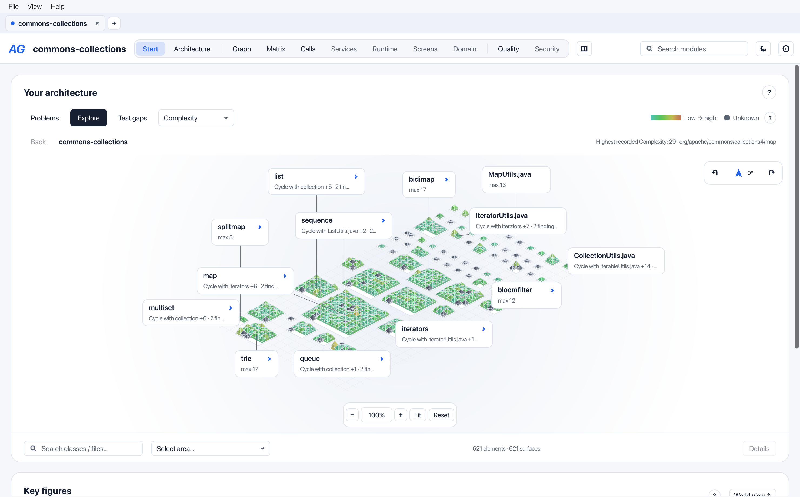
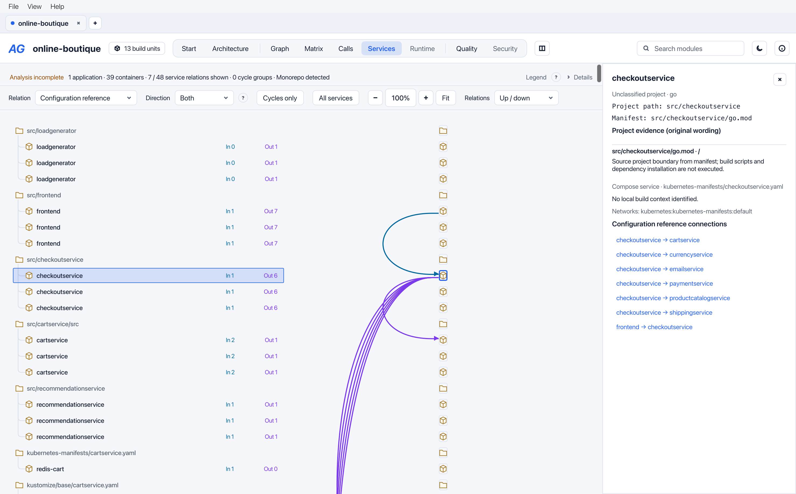
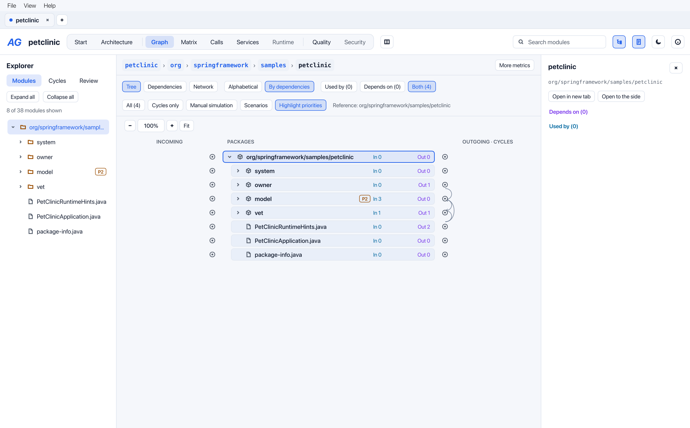
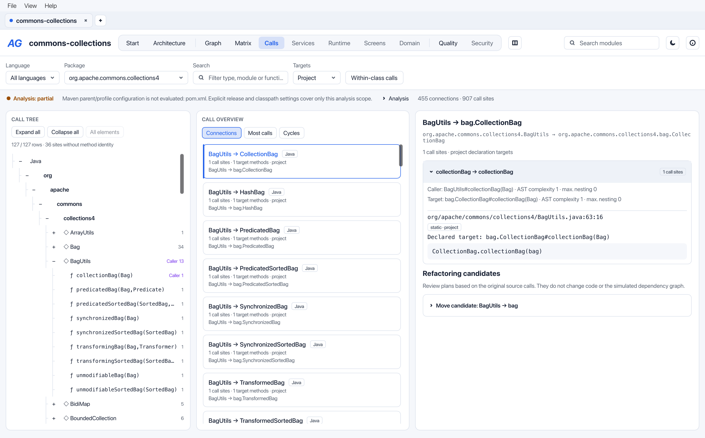
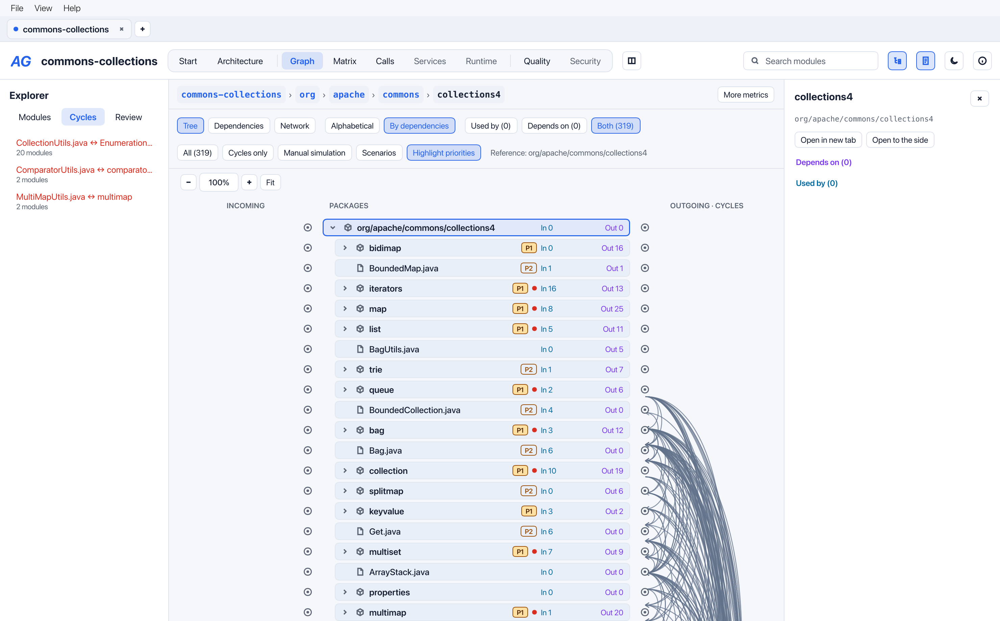
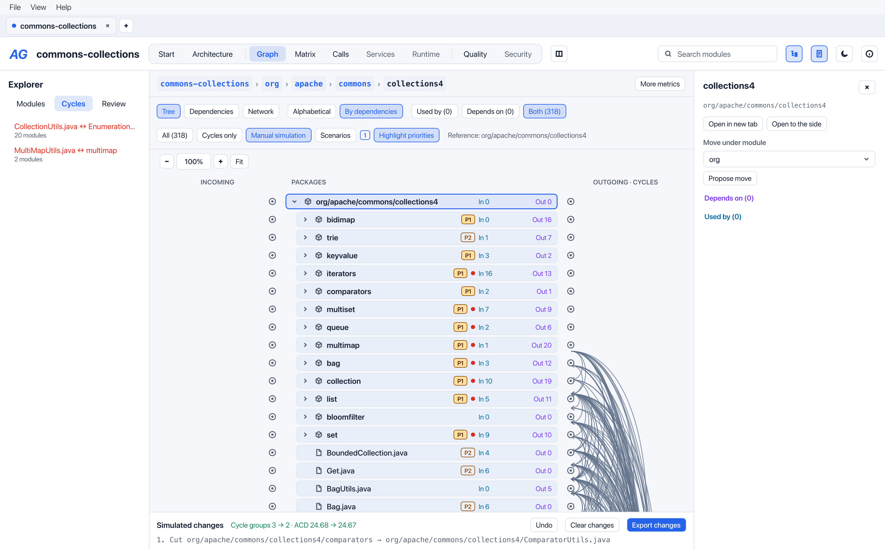
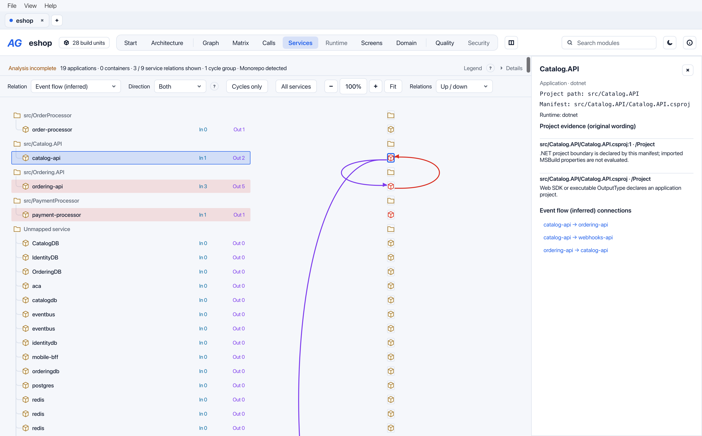
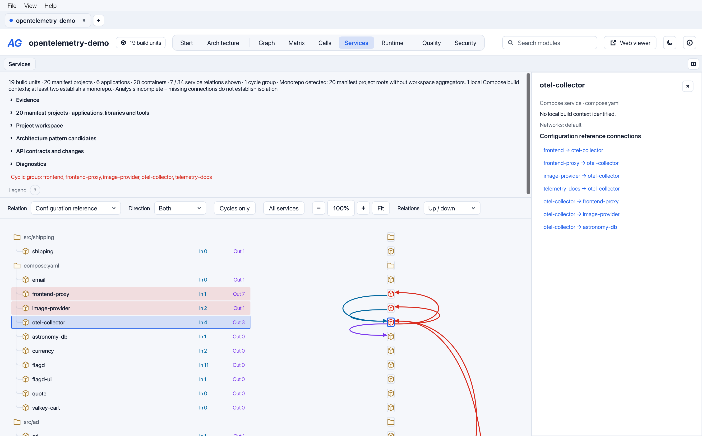

Map dependencies.
Analyse package, call and service dependencies from source code and project configuration. Start with a repository or focus on individual services.
ArchGuard connects dependency analysis, UI flows and domain models. Assess structural risks, enforce architecture rules in CI and give coding agents focused project context.
Explore your project
Desktop · CLI · MCP Open source · Local analysis · No telemetry
Analyse package, call and service dependencies from source code and project configuration. Start with a repository or focus on individual services.
Assess coupling and cycles at their source locations. Use metrics and Git history to identify candidates for refactoring.
Define layer rules and thresholds as team policy. Check changes in CI and expose the same architecture context through MCP.
Use coupling, complexity and cohesion to identify structural hotspots. Investigate affected modules and trace their dependencies to the code.

Identify branching-heavy code and focus reviews on testability and maintenance effort.
Available metrics depend on the language adapter and analysis tools. Unmeasured values remain unknown. Tools and prerequisites.
Investigate module boundaries, cyclic dependencies and call relationships in one workspace. Use the graph for structure, the matrix for dense dependencies and source references for the review.

Assess package boundaries and cycles, then trace disputed dependencies to their source locations.
Connect user actions to endpoints, permissions and domain state changes. Assess technical dependencies in the context of application behaviour.
For architecture reviews, taking over existing systems and preparing changes to business functionality.
Map application routes, navigation and HTTP actions. Trace recognized user actions into backend handlers and inspect the affected source locations.
GUIDECompare declared access rules across screens and endpoints. Investigate roles, anonymous access and frontend/backend mismatches; export the results for review.
GUIDERecover domain structures from implementation: entities, relationships, state transitions and recognized business rules. Use the model to discuss module boundaries and responsibilities.
GUIDEInvestigate which actions and messages can cause a domain state. Follow recognized chains through endpoints, use cases and event handlers across service boundaries.
GUIDETurn team conventions into repeatable checks: resolvable navigation, declared endpoint access and frontend/backend agreement. Findings include source locations and remediation hints.
GUIDECompare load assumptions and capacity options against the service topology. Investigate how call rates, instances and service times affect potential bottlenecks. Available in the separate load-simulation build.
Explore all features and guides

JHipster · UI flows and access declarations

NetBox · Domain modules · Partial analysis
Identify shared infrastructure and data access.
Analyse service coupling across Compose, Kubernetes and Terraform. Identify shared infrastructure and recognized data access before changing service boundaries or deployment structures.
archguard services . --format jsonThe analysis distinguishes shared servers, databases and tables. It uses project files; recorded runtime access provides a separate source of evidence.
Example analysis: Online Boutique · Static manifests, without Helm/Kustomize rendering.
Commands and limits
Online Boutique · Deployment dependencies · Partial analysis. Sources

Online Boutique · Configured Redis dependency. Sources
Identify new policy violations in the pull request.
Make agreed architecture boundaries testable in the build. Layer rules, thresholds and baselines produce inspectable findings for pull requests; the GitHub Action supports the CI workflow.
archguard check . --baseline
archguard review . --base main --format pr-commentA baseline records deliberately accepted existing findings. New violations remain visible in review.
Example of a failing gate: A local teaching rule produces one layer finding in Spring PetClinic. Check result.
Example PR comment with findings and KPI deltas. Example setup.
Commands and limits
Spring PetClinic · Illustrative local layer policy. Sources
Prepare changes with relevant project context.
Give coding agents focused context for affected files, dependencies and architecture policies. The local MCP server returns bounded, paginated responses with source locations for verifiable change proposals.
archguard mcp --root /path/to/projectUse change context before an edit and architecture comparison after implementation. Project tests still verify behaviour.
Example query: the MCP server returns source locations for a dependency in Commons Collections.
edge_evidence
comparators → ComparatorUtils.java
NullComparator.java:23
import org.apache.commons.collections4.ComparatorUtils;
Apache Commons Collections · Call analysis. Sources
Assess the effect on cycle groups before implementation.
Compare alternative module boundaries with virtual cuts, moves and merges. Assess their effect on cycle groups before implementing the change in source code.
archguard simulate . --ops operations.json --format jsonSimulation changes the graph model. Verify source compatibility and behaviour when implementing the proposed refactoring.
Example: 3 → 2 cycle groups after a virtual cut between comparators and ComparatorUtils. Operation and result.
Commands and limits
Commons Collections · Before simulation: 3 cycle groups. Sources

Commons Collections · After a virtual cut: 2 cycle groups. Sources
Keep generated architecture information current.
Keep the technical parts of your arc42 documentation aligned with the code. Update generated chapters and diagrams, check for drift in CI and export material for architecture reviews.
archguard doc . --arc42 --stdout
archguard doc . --arc42 --format docx
archguard graph . --format structurizrMarkdown, AsciiDoc, Word and Structurizr/C4 support different documentation workflows. Your team supplies business goals and architecture decisions. Export formats and limits.
Commands and limits
Microsoft eShop · arc42 system context. Sources
Assess modularity and change risk with coupling metrics, propagation cost, tangledness and layer drift.
archguard review . --format jsonConnect structural coupling to Git churn, co-change and CODEOWNERS. Associate frequently changed areas with their owners and documented decisions.
archguard hotspots .
archguard co-change .
archguard ownership .Check interface changes using OpenAPI and GraphQL. Add recorded OpenTelemetry traces to investigate observed calls and suspicious database access patterns.
archguard contracts .
archguard runtime .Bring test, coverage and quality reports into the architecture review. Generate a CycloneDX inventory and check licence policy alongside results from explicit advisory scans.
archguard sbom . --format cyclonedx
archguard evaluate .
Jellyfin · Partial dependency scan; 0 findings in the scanned scope
Start with the included service demo, then explore open-source libraries, a large Java codebase and real microservice systems. Paths are relative to the ArchGuard repository; open them with File → Open project… in the desktop app.
“Why do these services depend on each other?”
A deliberately coupled shop across three Compose stacks. Follow the catalog → pricing → promotions cycle or investigate orders → payments → risk.
examples/service-shopOpen this folder in the desktop app and choose Services. No containers required. Configured HTTP and startup dependencies are separate evidence.
Demo walkthrough“Where do packages become tightly coupled?”
Inspect a Java library through its graph, World View and tree matrix. Expand packages, focus a cycle, and trace imports back to source files.
examples/checkouts/commons-collectionsClone the example and copy its configuration first using the walkthrough. Import analysis works without building the library; compiler-backed metrics need a suitable JDK.
Setup & walkthrough“Can event-driven services form a cycle?”
Investigate asynchronous coupling in a .NET Aspire system. Trace recognized event publishers and subscribers into the service implementation.
examples/checkouts/eshopStatic event-name matching over shared RabbitMQ configuration. These are candidate routes, not observed runtime traffic.
Setup, cycle & source evidence
“How far do cycles reach in a large codebase?”
Analyze 3,369 production Java files without building Kafka. Open the architecture landscape, step into the packages with cycles and trace a two-file cycle to its import lines.
examples/checkouts/kafkaClone the pinned release and copy its configuration first. Java analysis is partial: no build dependencies or generated types.
Setup & recorded scope
“Which connections are calls, and which are only configuration?”
A shop in Go, Java, C#, TypeScript, Rust and more. Follow checkout's gRPC calls to their source lines, then find out why the telemetry collector closes a configuration cycle.
examples/checkouts/opentelemetry-demoStatic analysis of compose.yaml, collector configuration and sources. No containers are started; coverage is reported as partial.

Use the desktop app to explore, the CLI to automate, and MCP to let a coding agent query the same analysis.
archguard mcp --root /path/to/projectRegister this command as a stdio MCP server in your agent client.
“Show me the largest dependency cycle and the source references that establish it.”
“Which services call orders, and is that connection configured or observed?”
“Explain the architecture findings in this change before suggesting a fix.”
Answers depend on the available source, configuration and imported evidence.
Analyse multilingual repositories with a shared architecture model. Import, call and metric analysis uses the available compiler and syntax tools for each language.
Missing evidence is not a zero. Dynamic calls, generated code and unavailable dependencies can leave gaps. Coverage, runtime activity and other imported measurements require actual reports. A static graph does not prove the complete runtime architecture. What to install for each language, framework and report ↗
Install the latest release with one command, then point it at your project. The script picks the build for your OS and CPU and checks it against the release's SHA256SUMS. archguard update keeps it current.
Build ArchGuard from a repository checkout with a Rust toolchain, then point it at your project.
Install options and first steps# Install the latest release
curl -fsSL https://raw.githubusercontent.com/@@REPOSITORY@@/main/scripts/install/install.sh | sh
# Open a project in the desktop app
open ~/Applications/ArchGuard.app # macOS, then File → Open project…
archguard-desktop /path/to/project # Linux
# Check architecture in your terminal or CI
archguard check /path/to/project# Install the latest release (PowerShell)
irm https://raw.githubusercontent.com/@@REPOSITORY@@/main/scripts/install/install.ps1 | iex
# Open a project in the desktop app
archguard-desktop C:\path\to\project
# Check architecture in your terminal or CI
archguard check C:\path\to\project# From the ArchGuard repository
cargo install --path crates/archguard-cli --locked
# Open a project in the desktop app
cargo run --release -p archguard-desktop -- /path/to/project
# Check architecture in your terminal or CI
archguard check /path/to/projectThe install script also installs the desktop app; File → Open project… opens further projects.
Rules and detected violations determine the check result.
Install ArchGuard, choose your source scope and explore the desktop app.
FOLLOW THE EVIDENCETrace HTTP and event relationships, inspect evidence and zoom into a service.
ASK YOUR AGENTConnect your coding agent and start with natural-language investigation prompts.